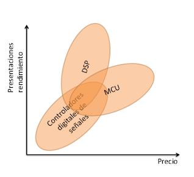

Comparsions
In this section we will see a comparsion between DSP, MCU and DSC.

X - Price
Y - Efficiency / Capability
Now we will see the definition of MCU and DSC.
Microcontroller
- Definition of Microcontroller:
- · Is a small computer on a single integrated circuit.
- · Contains one or more CPUs along with memory and programmable input/output peripherals.
- · Are designed for embedded applications.
- · Are used in automatically controlled products and devices.
- · Are an economical and popular means of data collection, sensing and actuating the physical world as edge devices.
Digital Signal Controller
- Definition of Digital Signal Controller:
- · Is a hybrid of microcontrollers and digital signal processors
- · Are usually programmed using the C programming language.
- · they incorporate features found on most DSPs such as MAC units, barrel shifters, and large accumulators.
- · Are used in motor control, power conversion, and sensor processing applications.
- · Are being marketed as green technologies for their potential to reduce power consumption in electric motors and power supplies.